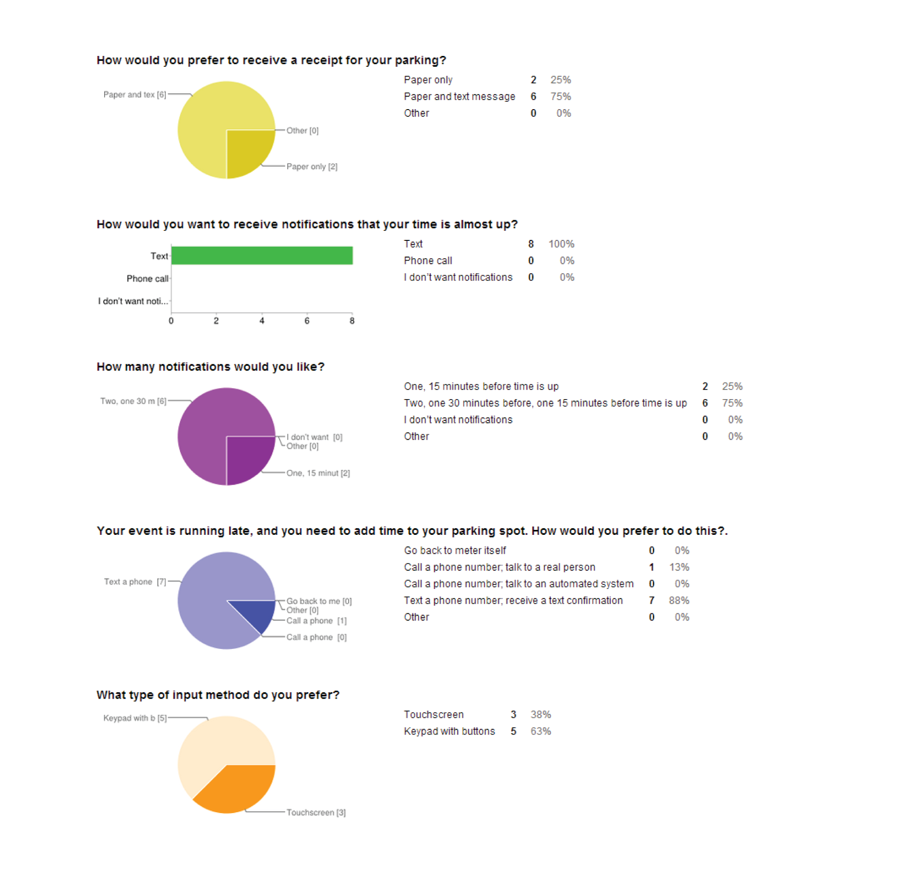
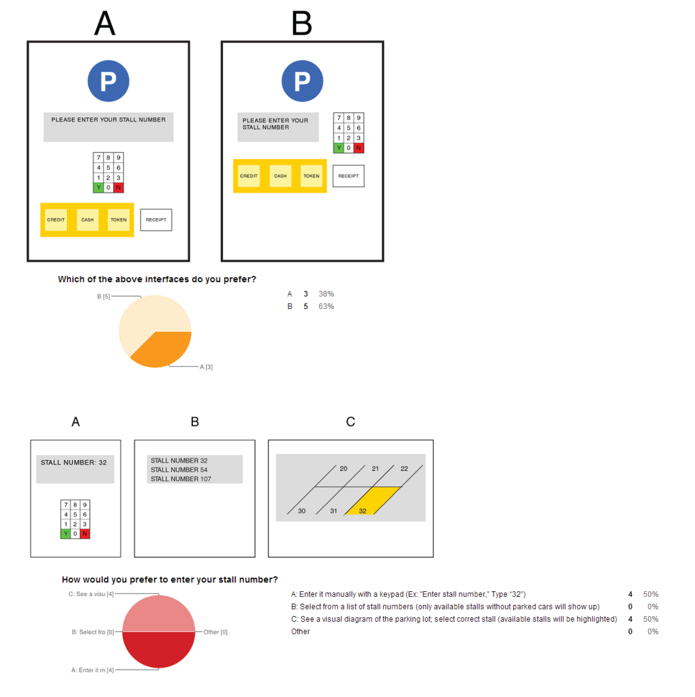

HCI Methods Project Overview
This was a group project for my HCI Methods course at Rice University. Our goal wasn't to reinvent parking pay stations, but to perform different types of analyses to support our design decisions. We utilized methods such as task analysis, cognitive walkthroughs, surveys, and more. Below are some of the methods that I personally executed and at the bottom of the page is a link to the entire report.
Problem: Parking pay stations are often hard to understand and difficult to use. You just want to know how much it costs to park your car in a location for a certain amount of time and then pay. Also, the last thing you want to do is worry about whether or not your car is going to get towed because you can't remember how much time you paid for.
Solution: A more intuitive pay station that gives you two options. One, pay a flat fee by the hour and receive optional phone notifications when your time is almost up. Two, pay by the minute with a credit card so you don't have to worry about a set amount of time.
Survey Design
The first step was to create a survey to ask users about their experiences with pay station parking lots. We asked questions that we felt could help us make informed decisions on our designs and we also left some questions open-ended so participants could give more general feedback if they desired.
 Task Analysis
We observed users as they utilized existing parking pay stations and took notes on how they accomplished the task of paying for their parking. Below, we created a task analysis for our own parking pay station. The task analysis helped us review the users' goals and make sure those goals were easy to accomplish. It also helped us avoid creating too many steps in the process and ensured that sub-tasks were not branching down too deep into one main task.
Flow Analysis
Flow analysis allowed us to see the traffic flow of people, objects, and information. The main point of interest that we were wary of, especially because of vehicles, was paths of intersection. We kept the number of intersections to a minimum to enable a smooth flow of information.
Link Analysis
The link analysis helped our team determine where to lay out the components of our pay station interface. The percentages represent how often the users tend to look between two components. High percentages indicate that the linked components should be placed near each other.
Mockups
In the link to the report below, we have mockups for our pay station design. As you can see, the design we ultimately ended up drafting wasn't particularly novel. In fact, our surveys discovered that most people are actually decently satisfied with the design of current pay station systems. Overall, my team felt that we made a number of enhancements that would satisfy the participants we surveyed. My greatest takeaways from this project were the practical applicability to a real-life interface and a greater understanding of HCI methods and analyses.